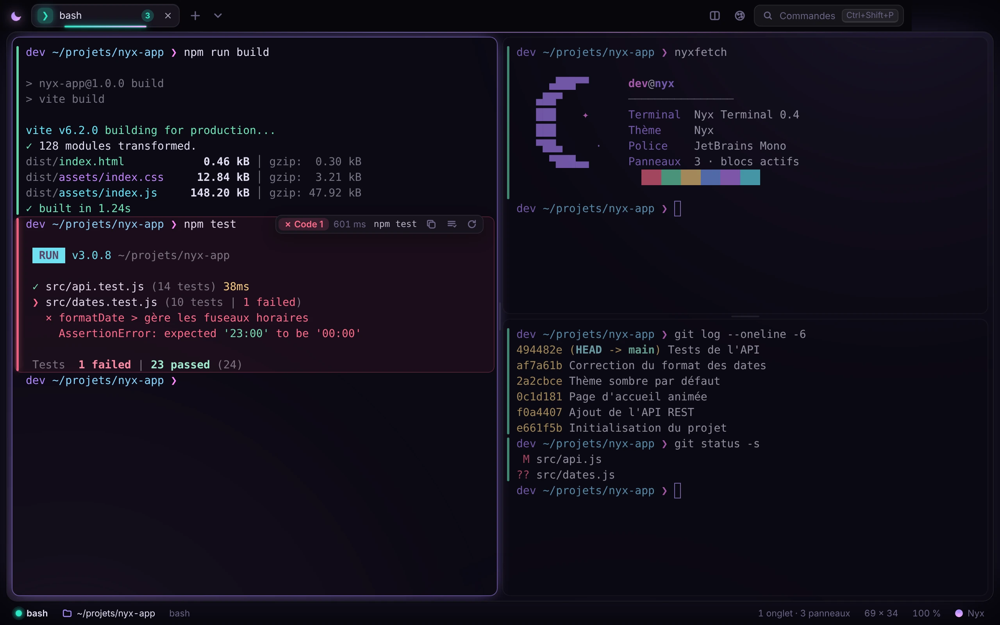
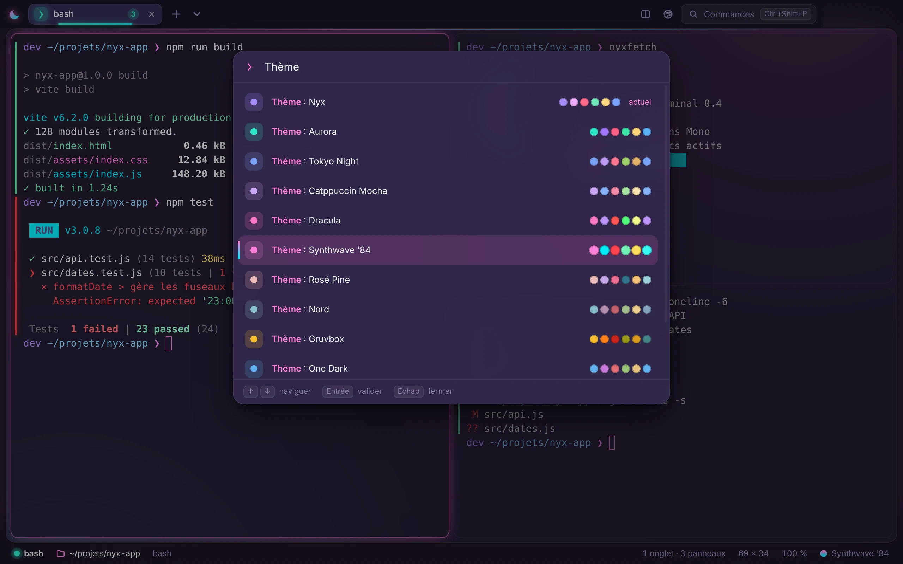
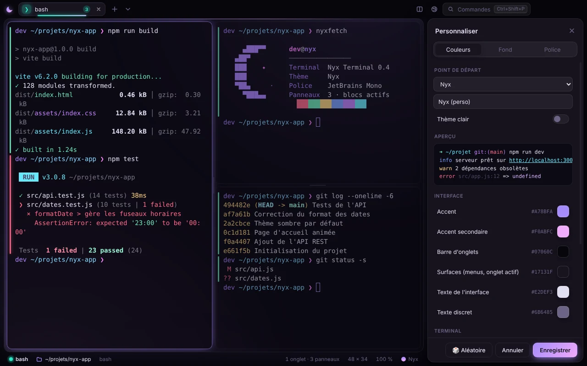
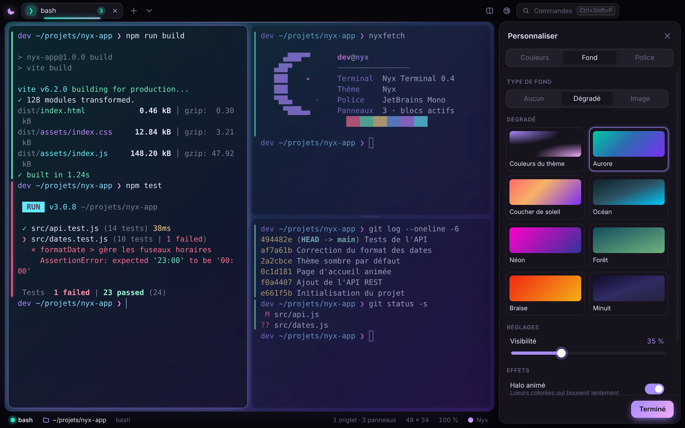
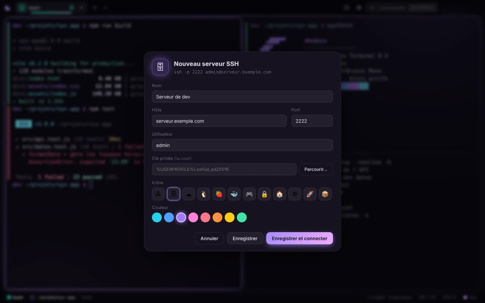
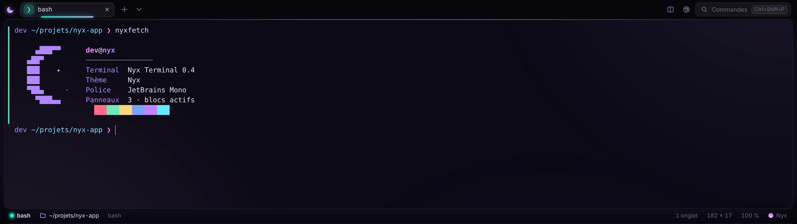

Blocs de commandes
Chaque commande et son résultat forment un bloc : vert si elle réussit, rouge si elle échoue, avec sa durée. Copie la sortie ou relance-la en un clic.
Nyx Terminal réunit PowerShell, CMD, WSL, Git Bash et tes serveurs SSH dans une seule fenêtre moderne, fluide et colorée. Divise ton écran, retrouve chaque commande en un coup d'œil et personnalise tout.
Installeur ou version portable · Windows 10 / 11 (64 bits) · Licence MIT

Les meilleures idées des terminaux modernes, réunies dans une application légère pour Windows.
Chaque commande et son résultat forment un bloc : vert si elle réussit, rouge si elle échoue, avec sa durée. Copie la sortie ou relance-la en un clic.
Plusieurs terminaux côte à côte ou empilés dans un même onglet. Redimensionne-les à la souris, passe de l'un à l'autre avec Alt+flèches, agrandis-en un avec AltMajZ.
Enregistre tes serveurs avec une icône et une couleur, et connecte-toi en un clic. Ton fichier ~/.ssh/config est importé automatiquement.
Appuie sur F12 depuis n'importe quelle application : un terminal descend du haut de l'écran, puis disparaît quand tu as fini.
À la réouverture, tu retrouves tes onglets, tes panneaux, tes dossiers et la taille de la fenêtre, exactement comme tu les avais laissés.
La barre d'état affiche où tu te trouves. Un clic l'ouvre dans l'Explorateur, et les nouveaux onglets démarrent au même endroit.
Une longue compilation se termine pendant que tu es ailleurs ? Windows te prévient, avec le résultat et la durée.
11 thèmes, un éditeur visuel avec aperçu en direct et un bouton 🎲 aléatoire, des dégradés ou ta propre image en fond.
CtrlMajP : tape quelques lettres pour changer de thème, diviser l'écran ou te connecter à un serveur.
=>, != et -> deviennent de vrais symboles avec Cascadia Code, Fira Code ou JetBrains Mono.
Toutes ces captures viennent de l'application, sans retouche.
Passe sur un thème avec les flèches : il s'applique instantanément à toute l'interface. Entrée pour le garder, Échap pour revenir.

Le tiroir « Personnaliser » (CtrlMaj,) pousse le terminal sur le côté pour que tu voies chaque changement en direct.

Choisis un dégradé (Aurore, Océan, Néon, Coucher de soleil…) ou ta propre image, puis règle le flou et la visibilité pour garder un texte lisible.

Ajoute un serveur en tapant simplement utilisateur@serveur:port : les champs se remplissent tout seuls. Il apparaît ensuite dans le menu et dans la palette.

Le terminal glisse depuis le haut de l'écran sur lequel se trouve ta souris, par-dessus tes autres applications. Il se cache tout seul quand tu cliques ailleurs.

Sur la page des versions, prends NyxTerminal-Setup (installeur) ou NyxTerminal-Portable (sans installation).
L'installeur crée les raccourcis sur le Bureau et dans le menu Démarrer. La version portable se lance directement.
Ouvre la palette avec CtrlMajP, choisis ton thème et ajoute tes serveurs. C'est parti.
C'est normal : Nyx Terminal n'est pas encore signé numériquement, donc Windows ne connaît pas son éditeur. Ça ne veut pas dire que le fichier est dangereux. Le code est public et chaque .exe est compilé par GitHub à partir de ce code.
Compare l'empreinte de ton fichier avec celle du fichier SHA256SUMS.txt de la version. Dans PowerShell :
Ce qui arrive dans les prochaines versions. Le calendrier est indicatif et peut évoluer selon vos retours.
Oui, totalement. Nyx Terminal est open source sous licence MIT : tu peux l'utiliser, le modifier et le partager librement.
Non. L'application n'envoie rien sur Internet d'elle-même. Les seules connexions sont celles que tu lances depuis le terminal (ssh, git, npm…) et les liens que tu ouvres avec Ctrl+clic.
Parce que l'application n'est pas encore signée numériquement : Windows ne connaît pas son éditeur. Clique sur « Informations complémentaires », puis « Exécuter quand même ». La signature est prévue dans la feuille de route.
PowerShell 5 et 7, l'Invite de commandes, WSL, Git Bash et SSH sont détectés automatiquement. Tu peux aussi ajouter n'importe quel programme comme profil personnalisé.
Windows 10 ou 11 en 64 bits. Aucune autre installation n'est nécessaire.
Ouvre une « issue » sur GitHub. Toutes les suggestions sont les bienvenues !
Télécharge Nyx Terminal gratuitement et transforme ta ligne de commande.
Télécharger pour Windows